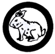

Rabbit Raising
- House properly a litter of rabbits from the mating of the doe until marketing time for the litter.
- Explain the use of this breed and know about one breed used for meat, one for fur, and one for wool.
- Keep a breeding record, a feeding schedule, and a financial record of the rabbits you have raised.
|